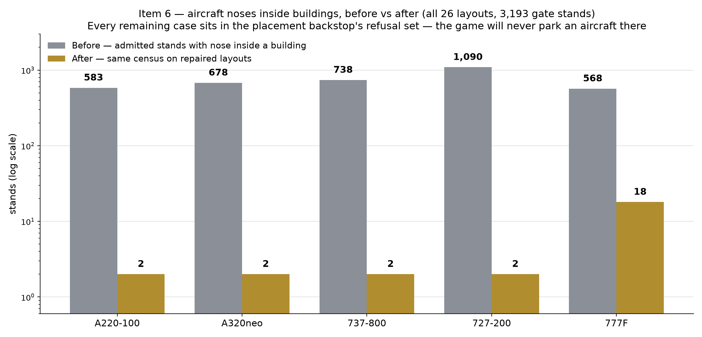

DEVELOPMENT — THE PAPER TRAIL
The Record Room
Studios run on stories, and stories drift. This one runs on a board: every piece of work carries a state — not started, building, proving, done — and a state is only allowed to change when somebody has checked the evidence with their own eyes, in that moment.
Filed under 26 November 2026
The studio's whole effort is on one game: WildGenesis 3D. Its rebuild is paused at 0.6.3 — a restructure of the game its first builder made, the same game and the same systems rebuilt cleanly: the new structure and the bug-catching gate are done and proven, the next slice's work is banked unproven, and every slice is proven against the same 48-check battery before the next begins.
Also in the file: this website's status lines were corrected against the records — Blacksite is unfinished with development stalled indefinitely, and WorldForge is unfinished and parked at 0.5.0-dev. Neither is complete, and neither is the active game.
What the room keeps
📈 The Evidence Annex
Charts, counts and photographs: the exhibits behind the claims, including the great stand repair drawn before-and-after.
🏷️ The Release Ledger
What this studio has actually released, what it has finished but holds, and why those are separate lists.
🔢 The Version Ledger
Every world's current number, what state that number represents, and who gets to change it.
One exhibit, by way of introduction
